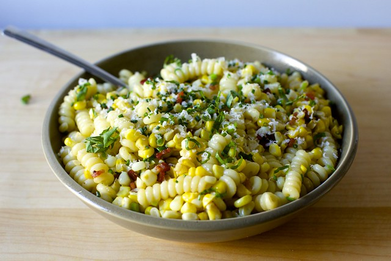

Corn, Bacon & Parmesan Pasta

Description
Corn bacon pasta, as it is affectionately called around here, is a family favorite. This pasta dish is salty from
the bacon, a little sweet from the corn, and creamy from the addition of mascarpone at the very end.
From Smitten Kitchen: Corn, Bacon &
Parm Pasta
Ingredients
- 8 oz dried pasta
- 1/4 pound bacon, ideally thick-cut, diced
- 2 ears corn, shucked and kernels cut from cob
- Salt and freshly ground black pepper or red pepper flakes
- 3 scallions, thinly sliced
- 1/3 cup finely grated parmesan
- Fistful of fresh basil and chives, chopped
Steps
- Cook your pasta in a large deep saute pan until al dente, or 1 to 2 minutes before it is done.
- Reserve a cup of pasta cooking water and drain.
- Scatter bacon in pan over medium-high heat, no need to heat the pan first. Cook, stirring, until evenly
browned and crisp. Use a slotted spoon to transfer bacon bits to paper towels to drain.
- Pour off all but 1 tablespoon bacon fat from pan (save for other fun stuff, like frying eggs) and add corn
to it. Season corn with salt and pepper and cook, stirring for 1 to 2 minutes, until crisp-tender.
- Add pasta and a couple splashes of the cooking water and half the parmesan and toss, toss, toss the pasta
with the corn, seasoning with more salt and pepper if needed and adding more cooking water if it doesn’t
feel loose enough.
- Add scallions and stir to warm. Stir in bacon and transfer to a serving bowl. Sprinkle with remaining cheese
and fresh herbs. Dig in.
Return to Home Page